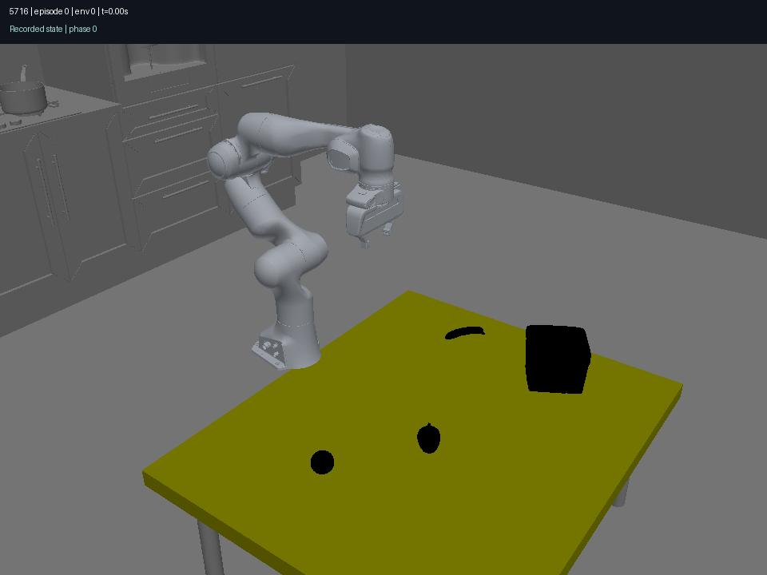

Task rendering
The spectator viewer follows measured robot links and task objects. Tasks on the same embodiment share their default camera direction and recording format. The viewer fits the camera to the moving parts, so a small tabletop scene and a larger robot can both fill the frame.

Button pressing ·
i2rt_task10717

Environment
5716
Insertion ·
insertingThese images are reset frames from simulations on the axis server. The I2RT and Panda cameras look in from negative Y. The ARX camera looks in from positive Y.
I2RT Pick5000 expert replay
The frozen left-arm expert picked the object successfully in 175 control steps on axis. This episode uses the fixed I1 configuration, seed 42, environment 0. The recorder captured the reset and every control step without dropping a frame. In the separate 16-attempt evaluation, the actor succeeded 15 times across four objects with four replicas each.
What a recording contains
Each recording bundles the scene geometry, mesh hashes, and timestamped poses in metres with Z up. A pose contains XYZ followed by a WXYZ quaternion. Reset and terminal events identify episode boundaries. Task-specific objects, goal markers, and available status fields stay with the recording.
Replay and video
From the OmniReset checkout on axis, replay a recording in the interactive viewer or export one episode as a 960 × 720 H.264 MP4 at 30 frames per second. The export holds sampled poses according to their simulation timestamps.
PYTHONPATH=src .venv-viser/bin/python tools/diagnostics/visualizer.py replay \
--recording runs/inspect/recording --port 18080
PYTHONPATH=src .venv-video/bin/python tools/diagnostics/visualizer.py video \
--recording runs/inspect/recording --episode 0 --output runs/inspect/videoCalibrated camera replay is a separate data product for tasks with sensor recordings. It uses each camera’s recorded intrinsics, resolution, and timing. The point-mass teaching example uses the spectator recording format with its own geometry.